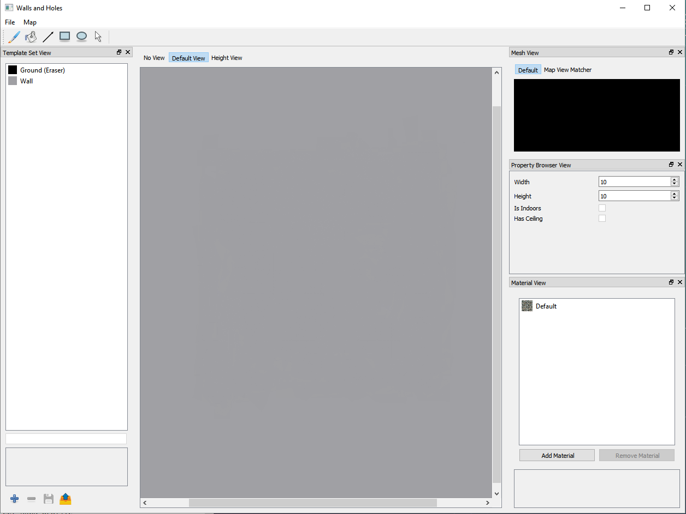
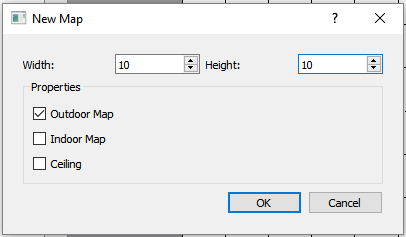

Walls and Holes User Manual¶
Introduction¶
Walls and Holes is an application that lets you quickly and easily create your own 3-D map from a 2-D tile map which can be exported into an object file.
Getting Started¶
Creating a New Map¶
When first opening the program you are greeted by the following window:
Main Window of the appilcation
To create a new map go to: File→New Map Ctrl + N

Creating a new map
The New Map dialog looks like this:
New Map Dialog
Here we choose the initial size of the map, whether it’s indoors or outdoors, and whether if the map will have a ceiling or not. After creating the new map you will see a grid of empty sqaures, and now you can draw on the map using the Wall template.

Map is created